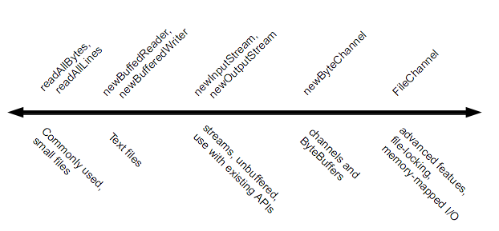

|
This page discusses the details of reading, writing, creating, and opening files. There are a wide array of file I/O methods to choose from. To help make sense of the API, the following diagram arranges the file I/O methods by complexity.

On the far left of the diagram are the utility methods
readAllBytes,
readAllLines, and the write methods,
designed for simple, common cases.
To the right of those are the the methods used to iterate over a stream
or lines of text, such as newInputStream,
newBufferedReader, then newInputStream and
newOutputStream. These methods are interoperable
with with the java.io package.
To the right of those are the
methods for dealing with ByteChannels,
SeekableByteChannels, and ByteBuffers,
such as the newByteChannel method.
Finally, on the far right are the methods that use
FileChannel for advanced applications needing file locking
or memory-mapped I/O.
This page has the following topics:
OpenOptions Parameterjava.io APIsByteBuffers
OpenOptions Parameter
Several of the methods in this section take an optional
OpenOptions parameter. This parameter is optional and
the API tells you what the default behavior is for the method when none
is specified.
The following StandardOpenOptions enums are supported:
WRITE – Opens the file for write access.
APPEND – Appends the new data to the end of the file.
This option is used with the WRITE or CREATE options.
TRUNCATE_EXISTING – Truncates the file to zero bytes.
This option is used with the WRITE option.
CREATE_NEW – Creates a new file and throws an exception
if the file already exists.
CREATE – Opens the file if it exists or creates a new
file if it does not.
DELETE_ON_CLOSE – Deletes the file when the stream is closed.
This option is useful for temporary files.
SPARSE – Hints that a newly created file will be sparse.
This advanced option is honored on some file systems, such as NTFS, where large
files with data "gaps" can be stored in a more efficient manner where those
empty gaps do not consume disk space.
SYNC – Keeps the file (both content and metadata)
synchronized with the underlying storage device.
DSYNC – Keeps the file content synchronized
with the underlying storage device.
If you have a small-ish file and you would like to read its
entire contents in one pass, you can use the
readAllBytes(Path) or
readAllLines(Path, Charset) method. These methods take care of most of the work for you,
such as opening and closing the stream, but are not intended
for handling large files. The following code shows how to use
the readAllBytes method:
Path file = ...; byte[] fileArray; fileArray = Files.readAllBytes(file);
You can use one of the write methods to write bytes, or lines, to a file.
write(Path, byte[], OpenOption...)write(Path, Iterable< extends CharSequence>, Charset, OpenOption...)
The following code snippet shows how to use a write method.
Path file = ...; byte[] buf = ...; Files.write(file, buf);
java.nio.file package supports
channel I/O, which moves data in buffers, bypassing some of the layers
that can bottleneck stream I/O.
The
newBufferedReader(Path, Charset) method opens a file for reading, returning a BufferedReadder
that can be used to read text from a file in an efficient manner.
The following code snippet shows how to use the
newBufferedReader method to read from a file.
The file is encoded in "US-ASCII."
Charset charset = Charset.forName("US-ASCII");
try (BufferedReader reader = Files.newBufferedReader(file, charset)) {
String line = null;
while ((line = reader.readLine()) != null) {
System.out.println(line);
}
} catch (IOException x) {
System.err.format("IOException: %s%n", x);
}
You can use the
newBufferedWriter(Path, Charset, OpenOption...) method to write to a file using a BufferedWriter.
The following code snippet shows how to create a file encoded in "US-ASCII" using this method:
Charset charset = Charset.forName("US-ASCII");
String s = ...;
try (BufferedWriter writer = Files.newBufferedWriter(file, charset)) {
writer.write(s, 0, s.length());
} catch (IOException x) {
System.err.format("IOException: %s%n", x);
}
java.io APIs
To open a file for reading, you can use the
newInputStream(Path, OpenOption...) method. This method returns an unbuffered input stream for reading
bytes from the file.
Path file = ...;
try (InputStream in = Files.newInputStream(file);
BufferedReader reader = new BufferedReader(new InputStreamReader(in))) {
String line = null;
while ((line = reader.readLine()) != null) {
System.out.println(line);
}
} catch (IOException x) {
System.err.println(x);
}
You can create a file, append to a file, or write to a file by using the
newOutputStream(Path, OpenOption...) method.
This method opens or creates a file for writing
bytes and returns an unbuffered output stream.
The method takes an optional OpenOption parameter.
If no open options are specified, and the file does not exist, a new
file is created. If the file exists, it is truncated.
This option is equivalent to invoking the method
with the CREATE and TRUNCATE_EXISTING options.
The following code snippet opens a log file. If the file does not exist, it is created. If the file exists, it is opened for appending.
import static java.nio.file.StandardOpenOption.*;
Path logfile = ...;
//Convert the string to a byte array.
String s = ...;
byte data[] = s.getBytes();
try (OutputStream out = new BufferedOutputStream(logfile.newOutputStream(CREATE, APPEND))) {
...
out.write(data, 0, data.length);
} catch (IOException x) {
System.err.println(x);
}
ByteBuffers
While stream I/O reads a character at a time, channel I/O reads a buffer
at a time. The
ByteChannel interface provides basic read and write
functionality. A
SeekableByteChannel is a ByteChannel that has the capability
to maintain a position in the channel and to change that position.
A SeekableByteChannel also supports truncating the file
associated with the channel and querying the file for its size.
The capability to move to different points in the file and then read from or write to that location makes random access of a file possible. See Random Access Files for more information.
There are two methods for reading and writing channel I/O.
newByteChannel(Path, OpenOption...)newByteChannel(Path, Set<? extends OpenOption>, FileAttribute<?>...)
newByteChannel
methods return an instance of a SeekableByteChannel.
With a default file system, you can cast this seekable
byte channel to a
FileChannel providing access to more advanced features such mapping a region of the file
directly into memory for faster access, locking a region of the file so
other processes cannot access it, or reading and writing bytes from an
absolute position without affecting the channel's current position.
Both newByteChannel methods enable you to specify
a list of OpenOption options.
The same open options
used by the newOutputStream methods are supported,
in addition to one more option: READ is
required because the SeekableByteChannel supports
both reading and writing.
Specifying READ opens the channel for reading. Specifying
WRITE or APPEND opens the channel for writing.
If none of these options is specified, the channel is opened for reading.
The following code snippet reads a file and prints it to standard output:
//Defaults to READ
try (SeekableByteChannel sbc = Files.newByteChannel(file)) {
ByteBuffer buf = ByteBuffer.allocate(10);
//Read the bytes with the proper encoding for this platform.
//If you skip this step, you might see something that looks like Chinese
//characters when you expect Latin-style characters.
String encoding = System.getProperty("file.encoding");
while (sbc.read(buf) > 0) {
buf.rewind();
System.out.print(Charset.forName(encoding).decode(buf));
buf.flip();
}
} catch (IOException x) {
System.out.println("caught exception: " + x);
The following code snippet, written for UNIX and other POSIX file systems, creates a log file with a specific set of file permissions. This code creates a log file or appends to the log file if it already exists. The log file is created with read/write permissions for owner and read only permissions for group.
import static java.nio.file.StandardCopyOption.*;
//Create the set of options for appending to the file.
Set<OpenOptions> options = new HashSet<OpenOption>();
options.add(APPEND);
options.add(CREATE);
//Create the custom permissions attribute.
Set<PosixFilePermission> perms = PosixFilePermissions.fromString("rw-r------");
FileAttribute<Set<PosixFilePermission>> attr = PosixFilePermissions.asFileAttribute(perms);
//Convert the string to a ByteBuffer.
String s = ...;
byte data[] = s.getBytes();
ByteBuffer bb = ByteBuffer.wrap(data);
try (SeekableByteChannel sbc = Files.newByteChannel(file, options, attr)) {
sbc.write(bb);
} catch (IOException x) {
System.out.println("exception thrown: " + x);
}
You can create an empty file with an initial set of attributes by using the
createFile(Path, FileAttribute<?>) method. For example, if, at the time of creation,
you want a file to have particular set of file
permissions, use the createFile method to do so.
If you do not specify any attributes, the file is created with
default attributes.
If the file already exists, createFile throws an exception.
In a single atomic operation,
the createFile method checks for the existence of the file and
creates that file with the specified attributes,
which makes the process more secure against malicious code.
The following code snippet creates a file with default attributes:
Path file = ...;
try {
Files.createFile(file); //Create the empty file with default permissions, etc.
} catch (FileAlreadyExistsException x) {
System.err.format("file named %s already exists%n", file);
} catch (IOException x) {
//Some other sort of failure, such as permissions.
System.err.format("createFile error: %s%n", x);
}
POSIX File Permissions has an example that uses createFile(Path, FileAttribute<?>)
to create a file with pre-set permissions.
You can also create a new file by using the newOutputStream methods,
as described in
Creating and Writing a File using Stream I/O. If you open a new output stream and close it
immediately, an empty file is created.
createTempFile methods:
createTempFile(Path, String, String, FileAttribute<?>)createTempFile(String, String, FileAttribute<?>)The first method allows the code to specify a directory for the temporary file and the second method creates a new file in the default temporary-file directory. Both methods allow you to specify a suffix for the filename and the first method allows you to also specify a prefix. The following code snippet gives an example of the second method:
try {
Path tempFile = Files.createTempFile(null, ".myapp");
System.out.format("The temporary file has been created: %s%n", tempFile)
;
} catch (IOException x) {
System.err.format("IOException: %s%n", x);
}
The result of running this file would be something like the following:
The temporary file has been created: /tmp/509668702974537184.myapp
|